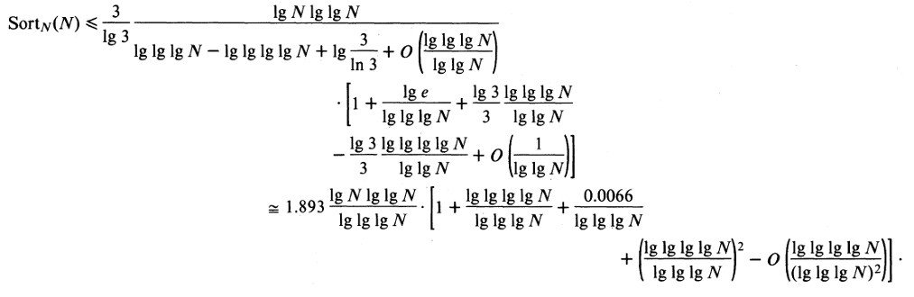

Simple task
Sort as much as you can in 60 seconds .
Current World Record - 1353 GiB in 60 seconds (Triton Sort, 2011)
22.5 GiB/s
Disk Read Speed: ~ 50 MiB/s
Triton Sort |
Our Configuration |
|||
| # of Nodes | 52 | 4 | ||
| # of Cores / Node | 2 Quadcores = 8 | 12 | ||
| Total # of Cores | 416 | 48 | ||
| Disk Space | 52 x 16 x 500 GiB ≈ 416 TiB | 250 GiB ($WORK) | ||
| Memory / Node | 24 GiB | 24 GiB | ||
| Total Memory | 1248 GiB | 96 GiB |

52 nodes, each have 16 disks
A total of 832 disks
A conservative esimate: 60 MB/s R/W speed => ~ 50 GiB/s of bandwidth
Their sorting speed => 22.5 GiB/s
= 22.5 GiB/s Reading + 22.5 GiB/s Writing
= 45 GiB/s
They are operating at close to disk bandwidth
Use OpenMPI for inter-machine parallelism
Use Cilk for intra-machine parallelism
As discussed in class, we use over-sampling to choose k good pivots, and hence divide the input into k roughly equal parts.
Each machine then works on an independent partition.
When all the machines have independently sorted their partition, we can stitch the independent paritions without needing to merge them.
Use a Merge-Sort based algorithm to sort the relevant parition on each node.
Use Cilk for this purpose
Try various optimizations to reduce buffer copying in Merge-Sort.
We are practically limited by the disk I/O bandwidth. If the disk can only read / write 50 MB/s, we cannot sort more than (50*60)/2 = 1.5 GB in a minute. Potentially use compression before writing.
Network Bandwidth might be limited. Potentially use compression.
Certain optimizations like ensuring the file is in the cache might help (by reading the file just before the program is run).
| Table of Contents | t |
|---|---|
| Exposé | ESC |
| Full screen slides | e |
| Presenter View | p |
| Source Files | s |
| Slide Numbers | n |
| Toggle screen blanking | b |
| Show/hide slide context | c |
| Notes | 2 |
| Help | h |